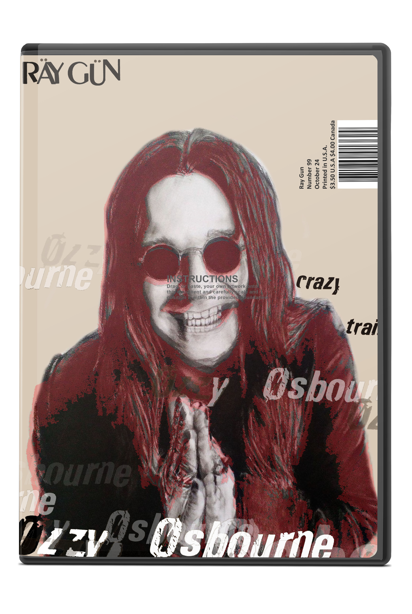

-
gncc magazine cover
Magazine designed for the Grand National Cross Country racing event held yearly on the eastern coast of the country. This magazine contains all the main parts of the magazine; table of contents, departments, cover, and feature spread. All pictures and images are taken from the actual races and of the racers including the well known Kaliub Russell.
-

gncc magazine spread
Inside cover of GNCC Magazine. This spread shows the department section on the left, while on the right is the opening to Road 9, the name of the next section in magazine.
-

gncc magazine spread
Racing to Road 9 is the deparment section of the GNCC Magazine. Featured here are the places to go and where to eat when traveling to the Snowshoe race.
-

gncc magazine spread
Kaliub Russell spread; this is the feature article of the magazine. The image spans both pages, with emphasis on the rider's name in the lower right hand corner.
-

gncc magazine spread
This spread of the magazine talks about the highlighted racer. It uses images, text, and a list to emphasis on the rider's hit marks.
-
strange west virginia monsters book
This is one book in a set of three. Here is the Strange West Virginia Monsters cover. the brown, netural background goes with the dark green text to create an illusion of dark and mysterious creatures.
-

strange west virginia monsters book covers
Front and back cover of the Strange West Virginia Monster book. Pictured here is the matching back as well as the front to show what the book would look like as a whole.
-

braxton county monster book
Many shades of pink are used in the Braxton County book cover to express the alien-like creature the text portrays. This is one in a set of three book series.
-

braxton county book covers
Front and back cover of The Braxton County Monster book. Pictured here is the matching back as well as the front to show what the book would look like as a whole.
-
bigfoot5 book
Bigfoot5 uses a string like texture to be compared to that of bigfoot, the creature noone has seen but always heard of. This is one in a set of three book series.
-
bigfoot5 book covers
Front and back cover of the Strange West Virginia Monster book. Pictured here is the matching back as well as the front to show what the book would look like as a whole.
-

ozzy osbourne magazine cover
Ozzy Osbourne features this magazine cover for raygun. It is one in a set of two magazines.
-

rhcp magazine cover
The lead singer of RHCP features this cover edition of raygun magazine. It is one in a set of two magazines.